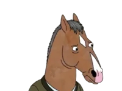
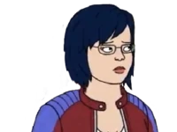
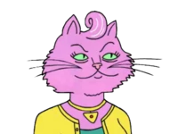
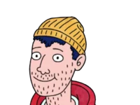

BoJack es un caballo que alcanzó la fama en los años noventa con la telecomedia Horsin' Around, el único éxito de su carrera. Desde que su programa fue cancelado, BoJack ha vivido abrumado por la frustración, el resentimiento y el odio a sí mismo. Aunque es una persona con una tormentosa vida personal, incapaz de reconocer abiertamente sus problemas o de comprometerse en una relación, también es alguien capaz de tomar decisiones inteligentes y que quiere ser feliz.

Diane es la escritora fantasma que redacta la autobiografía de BoJack Horseman. Es una mujer vietnamo-americana de Boston, feminista de tercera ola e intelectual incomprendida que vive con su pareja, el actor y antigua estrella de telecomedias Mr. Peanutbutter. A lo largo de la serie desarrolla una fuerte amistad con BoJack que sin embargo se complica cuando él se enamora de ella.
Es un labrador retriever, pareja de Diane y amienemigo de BoJack. Su rivalidad comenzó cuando protagonizaba la telecomedia Mr. Peanutbutter's House, con un argumento idéntico al de Horsin' Around. A pesar de esta rivalidad, Mr. Peanutbutter trata de mantener una buena relación con BoJack y le profesa una admiración no correspondida. Su personalidad es la antítesis de BoJack, al ser alguien positivo, amistoso y extremadamente inocente.

Es una gata persa rosa, agente de BoJack y su exnovia. Tiene un carácter manipulador y agresivo, en especial cuando desempeña su trabajo, y muchos problemas para separar la vida personal de la profesional.

Joven de 24 años sin trabajo ni propósitos en la vida, que se instaló en casa de BoJack después de una fiesta. Al no ser capaz de conseguir que se marchara, Todd vive gratis en el sofá de su sala desde hace cinco años. Aunque pueda parecer que BoJack lo desprecia, en realidad mantiene una relación de dependencia y siempre hará lo posible para que Todd esté cerca de él. El carácter de este personaje es absurdo, despreocupado y problemático, con tendencia a complicarse la vida cuando sus amigos no están cerca.